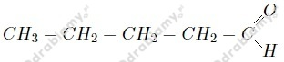
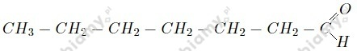
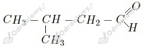
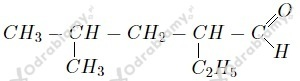

a)

b)

c)

d)

Izomerami są:
a) pentanal i c) 3-metylobutanal - ponieważ oba posiadają po 5 atomów węgla i jednakowe ilości atomów wodoru i tlenu w cząsteczce
b) heptanal i d) 2,4-dimetylopentanal - ponieważ oba posiadają po 7 atomów węgla i jednakowe ilości atomów wodoru i tlenu w cząsteczce
Zdaniami prawdziwymi są a oraz d .
wyjaśnienie zdań fałszywych:
ad.b. Aldehydy o małych masach cząsteczkowych ulegają rozpuszczeniu w wodzie (np. wodny roztwór metanalu to formalina).
ad.c. Cząsteczki aldehydów nie ulegają asocjacji.
Równanie reakcji:
a) Aldehyd cynamonowy nie jest aldehydem aromatycznym, ponieważ grupa aldehydowa w jego cząsteczce nie łączy się bezpośrednio z pierścieniem aromatycznym, tylko poprzez łańcuch węglowy.
b) Wzór sumaryczny tego związku możemy zapisać jako C9H8O. Jego masa cząsteczkowa wynosi więc: